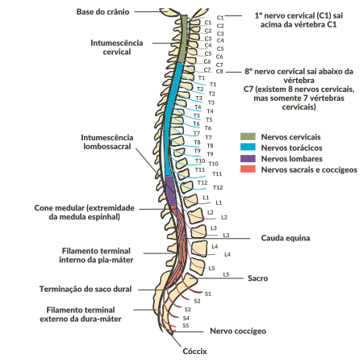

O cérebro, por sua vez, divide-se em telencéfalo e diencéfalo. Veremos também o tronco encefálico, o cerebelo e a medula espinhal.
Telencéfalo
Diencéfalo
Tronco encefálico
Cerebelo
Medula espinhal
Clique nos títulos para conferir.
O córtex cerebral, conhecido como substância cinzenta ou telencéfalo, é composto de corpos celulares dos neurônios. O núcleo cerebral tem a coloração branca, pois é composto de fibras nervosas que fazem a comunicação entre o córtex cerebral, os órgãos sensoriais e os músculos.
Os lobos parietais, temporais e occipitais estão envolvidos na percepção dos estímulos que os nossos órgãos sensoriais captam do meio exterior e das informações recebidas do próprio corpo. O hipocampo e o córtex pré-frontal modulam nossas respostas comportamentais ao estresse.
O diencéfalo é a região do encéfalo que fica entre o tronco encefálico e os hemisférios cerebrais. É composto do conjunto dos tálamos e estruturas no entorno: epitálamo, subtálamo e hipotálamo.
A maior parte das funções endócrinas é coordenada pelo hipotálamo, que exerce ação direta sobre a hipófise e indireta sobre outras glândulas, como tireoide, adrenais, gônadas e glândulas mamárias. Também participa da regulação da temperatura corporal, ciclo do sono, apetite, sede e sistema nervoso autônomo.
O eixo hipotálamo-hipófise-adrenal (HHA) é um sistema neuroendócrino que regula diferentes processos corporais e as reações ao estresse. Respostas do sistema imunológico, digestão, humor e emoções, alocação e gasto de energia estão relacionados fortemente ao funcionamento desse eixo.
As conexões do diencéfalo incluem vias para o sistema límbico (relacionado à memória e às emoções), para as áreas sensoriais primárias (por exemplo, auditiva e visual) e para os núcleos da base, envolvidos na coordenação motora.
O tronco encefálico é composto de mesencéfalo, ponte e bulbo (medula oblonga). Juntos, regulam a respiração, a frequência cardíaca e a pressão arterial.
O cerebelo recebe informações de músculos e tendões e participa do controle das atividades motoras e da manutenção do tônus muscular. Regula os movimentos voluntários e a aprendizagem motora. Integra informações sensoriais (proprioceptivas, vestibulares e visuais) para ajuste fino dos movimentos.
A medula espinhal se inicia na junção do crânio com a primeira vértebra
cervical e termina na altura entre a primeira e segunda vértebra lombar, no adulto.
Na medula espinhal, localizam-se os neurônios eferentes, que são os neurônios
motores que inervam os músculos, e os neurônios aferentes, aqueles que recebem os
estímulos. A medula espinhal atua no processamento inicial da informação de todos
esses impulsos.
Clique
na
imagem para ampliá-la.
Anatomia da medula espinhal.

Fonte: Netter, Frank H.. Atlas de Anatomia.